Cek Pulsa
Pengecekan pulsa dapat dilakukan tanpa melepas SIM Card dari modem. Anda dapat melakukannya dengan mengikuti petunjuk berikut:
- Download Program batch
Anda dapat mendownload 4 buah file batch pada komputer server dengan alamat folder share:
\\192.168.1.2\Source\SMS Gateway\batch
- Pengecekan pulsa
(Setiap kita akan memulai proses pengecekan pulsa, kita harus menutup program gammu yang berjalan terlebih dahulu. cara singkat nya dengan melakukan double click program batch "stop sms.bat")
- Pulsa Utama
Sebelum menjalankan file cek pulsa utama.bat, edit file tersebut dan pastikan untuk mengecek cara cek pulsa sesuai operator yang dipakai.
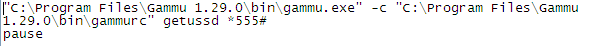
Contoh diatas dengan menekan *555# (Indosat)
- Pulsa SMS
Apabila operator mendukung pulsa sms, sebelum menjalankan file cek pulsa sms.bat, edit file tersebut dan pastikan untuk mengecek cara cek pulsa sesuai operator yang dipakai.
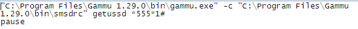
Contoh diatas dengan menekan *555*1# (Indosat)
Setelah kita selesai, jangan lupa untuk menjalankan kembali program gammu dengan melakukan double click program batch "start sms.bat".
Contoh penggunaan:
- Pada desktop komputer pastikan ada empat program seperti gambar di bawah ini:
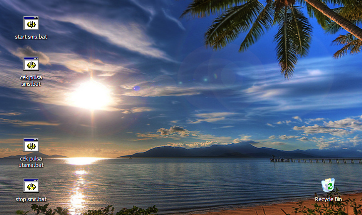
- Pertama, kita harus mengeksekusi/menjalankan program "stop sms.bat".
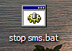
Tampilan program saat dijalankan seperti di bawah ini:
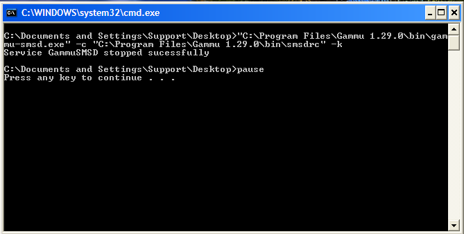
Dari informasi diatas dapat kita lihat bahwa gammu berhasil dihentikan "Stopped Successfully".
Tekan sembarang tombol untuk melanjutkan.
- Selanjutnya, apabila kita hendak melakukan pengecekan pulsa utama, masa aktif, serta masa tenggang, kita dapat menjalankan program "cek pulsa utama.bat".
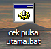
Tampilan program saat dijalankan seperti dibawah ini:
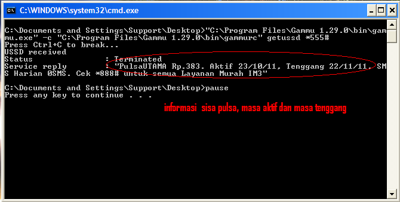
Dapat kita lihat informasi tentang Masa Aktif (Aktif 23/10/11), Masa Tenggang (Tenggang 22/11/11) dan jumlah Pulsa Utama sebesar Rp.383,-
Tekan sembarang tombol untuk melanjutkan.
- Jika operator kita memiliki jenis pulsa sms sendiri, dan kita hendak melakukan pengecekan terhadap sisa pulsa sms dan jumlah sms yang tersisa, kita dapat menjalankan program "cek pulsa sms.bat"
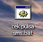
Tampilan program saat dijalankan seperti di bawah ini:
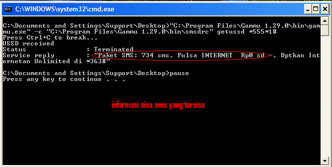
Dapat kita lihat informasi tentang jumlah sms yang tersisa, serta informasi lainnya yang dalam pesan singkat.
Tekan sembarang tombol untuk melanjutkan.
- Terakhir, setelah kita selesai untuk melakukan pengecekan pulsa, kita harus menjalankan program "start sms.bat".
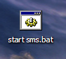
Tampilan program saat dijalankan adalah sebagai berikut:
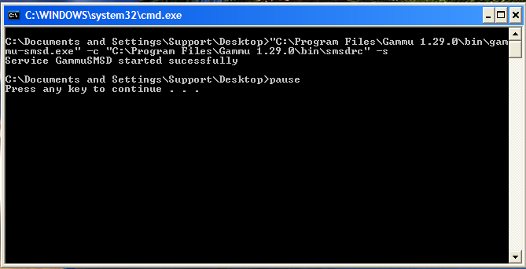
Dari informasi diatas dapat kita lihat bahwa gammu berhasil dijalankan "Started Successfully".
Tekan sembarang tombol untuk melanjutkan.
Copyright © 2010, IT Department of Miracle Aesthetic Clinic Group
Created with the Freeware Edition of HelpNDoc: Free CHM Help documentation generator